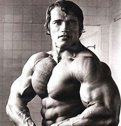

Am 08. März 2023 gegen 22:45 Uhr eskalierte ein Streit im McFit in Braunschweig. Der Streit entwickelte sich zu einer Massenschlägerei mit 15 Beteiligten. Zwei Beteiligte wurden verhaftet und zudem waren einige der Beteiligten mit Eisenketten und Messern bewaffnet.
Eine Frage die sich viele stellen, wenn sie den Körper von Arnold Schwarzenegger sehen ist, ob dieser Mann auf Steroide war. Hier erfahren sie endlich, ob er auf Steroide war und was die Wirkung bzw. Nebenwirkung von Steroiden ist.
